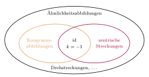

Aufgabe 5.4
- Nehmen Sie Stellung zu dem Satz: Alle Kongruenzabbildungen sind Ähnlichkeitsabbildung.
- Ist die zentrische Streckung auch eine Ähnlichkeitsabbildung?
- Was passiert bei einer zentrischen Streckung mit Faktor $k = 1$?
- Kann man jede Ähnlichkeitsabbildung in Komponenten zerlegen?
- Welche Rolle spielt die Identität als Kongruenzabbildung?
- Denken Sie an die Definition: Ähnlichkeit = Streckung $\circ$ Kongruenz

(a) Die Aussage stimmt. Ist $\kappa$ eine Kongruenzabbildung, so nimmt man als Streckung die mit dem Faktor $k=1$. Sie ist die Identität und ändert nichts: \[\kappa=\kappa\circ\vartheta(Z,1).\] Damit ist $\kappa$ eine Verkettung aus einer zentrischen Streckung und einer Kongruenzabbildung, also eine Ähnlichkeitsabbildung, und kongruente Figuren sind insbesondere ähnlich.
(b) Ja. Ist $\vartheta(Z,k)$ eine zentrische Streckung, so nimmt man als Kongruenzabbildung die Identität: \[\vartheta(Z,k)=\mathrm{id}\circ\vartheta(Z,k).\] Die Identität ist eine Kongruenzabbildung, also ist die zentrische Streckung eine Ähnlichkeitsabbildung.
Im Video: Etappe 8 · Ähnlichkeitsabbildungen bei 3:37